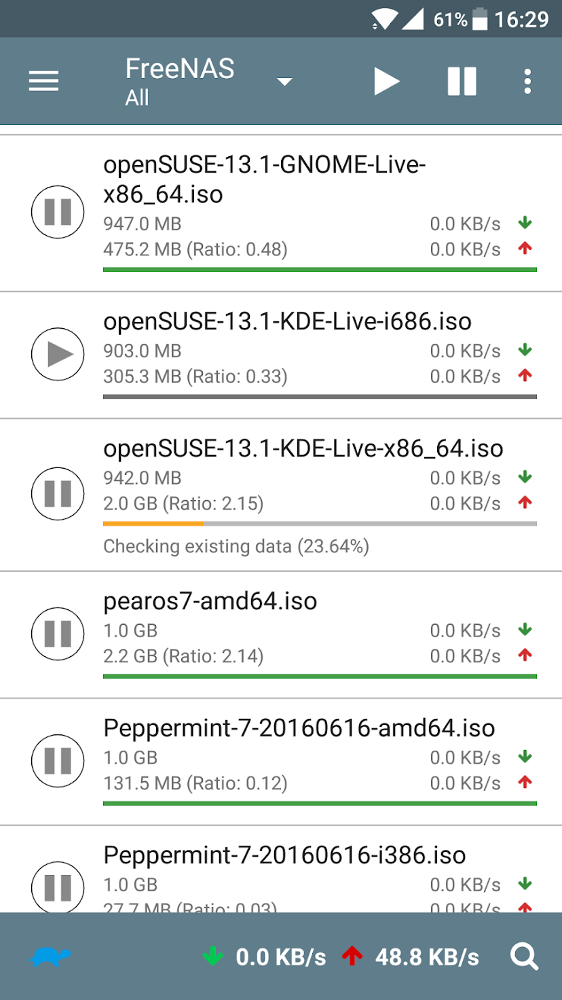
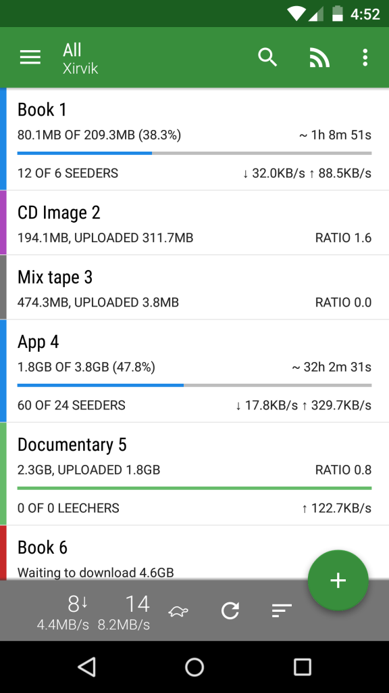

因为申请到一个PT账号,所以买了个树莓派准备做下载机,一般Linux下面比较有名的BT/PT下载软件是Transmission.这次我也以Transmission作为默认下载软件
安装Transminssion
一般默认的源里面就有所以直接下载
sudo apt-get update
sudo apt-get install -y transmission-daemon
修改默认配置文件
sudo vim /etc/transmission-daemon/settings.json
配置比较多但是其实只要配置几个关键的点就行了
下载目录
我的下载目录是挂载的一块3T的硬盘
"download-dir": "/home/pi/pt/complete",
未完成目录
"incomplete-dir": "/home/pi/pt/incomplete",
远程控制管理
"rpc-whitelist": "127.0.0.1",
"rpc-whitelist-enabled": false,
如果想指定特定IP管理的话可以把rpc-whitelist设置成192.168.1.*.
我的话没有修改,而是直接把rpc-whitelist-enabled改成false,这样就不走白名单模式
远程用户名密码
"rpc-username": "transmission",
"rpc-password": "123456",
密码是加密的,没关系直接把密码改为你想要的密码明文就可以,重启服务后会自动帮你加密
重载配置和服务
sudo service transmission-daemon reload
sudo service transmission-daemon restart
注意以下两个命令按顺序执行,单独restart的话配置不会保存
远程管理
浏览器中访问IP加9091端口：比如:http://192.168.1.200:9091/.
输入你配置的用户名密码直接可以程管理

网页管理比较简单,我一般都是用远程客户端管理的
桌面客户端
Mac和Win可以用开源的TransGUI来管理,下载地址:点我

Android客户端
安卓的话我用Transmission Remote,下载地址:点我

貌似Transdroid也不错,下载地址:点我

外网管理
如果想外网管理的话需要在路由器上做端口转发,把9091映射成你想要端口